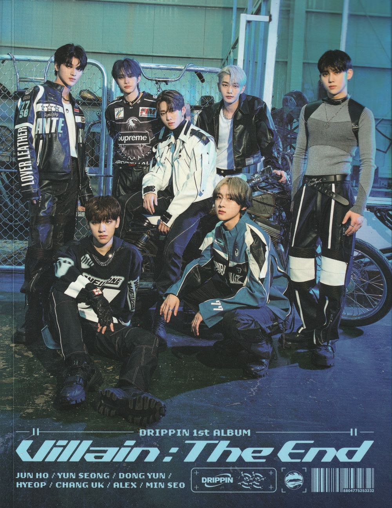

doqmeat's fav albums
doqmeat's fav albums 
here are the albums that mean the world to me! click on them for info, a little story, links, and maybe something more!
sepia record - siinamota
the first siinamota / powapowap album i listened to and how i discovered him!
man this album.... this is something i have very VERY close to my heart. it is a very important piece of media to me.
the songs while pretty simple (at times) have such a heavy weight to them. this is a beautiful album to me, but it also hurts to listen to because there's such a melancholic feeling to it. it feels very lonely too. i dont know maybe i am just rambling at this point.
and dont even get me started on the zinnia and meme storyline that siinamota introduces in this album... amazing
ever since i listened to this i have not been the same. this album was a turning point for myself and the reason why i love siinamota so so so much today
i dont think i'll ever own this physically since early siinamota albums are a pain to find (+ super expensive) but if i could have any of the albums on my wishlist it would be this one. sepia record i love YOU!
 and i think its also worth mentioning that i love the remaster (known as the remodel) version of this album as well. while i think the original ver is perfect, the remodel version touches up on some things and i really appreciate the small details added to the songs.
and i think its also worth mentioning that i love the remaster (known as the remodel) version of this album as well. while i think the original ver is perfect, the remodel version touches up on some things and i really appreciate the small details added to the songs.
for example in sky fish, siinamota added strings in the final verse of the song which makes it my fav version of it.
fav songs: sky fish  stoy. brown 999 zinnia and meme
stoy. brown 999 zinnia and meme
links: spotify / youtube / youtube (remodel)
soul lady - yukika
 soul lady my beloved
soul lady my beloved 
if i had to pin point an album that made me go insane about kpop, it would be this one
this was also the first ever album (i keep saying this but in reality this is the 2nd ever album i bought, the first one being loona's 12:00....... but i like to think i bought this one first) that i have ever bought with my hard earned retail money *shivers*
this album kinda changed me honestly. i still really think this if one of the best, if not THE BEST, kpop albums of all time. from start to finish. from top to bottom. i have never enjoyed an album as much as this one
i will always hold this album very close to my heart
i feel like before listening to this album i wasnt so crazy abt music to the point where i would sit down every day to listen to something new, write down my fav songs of whatever i had just listened. i was just an average music enjoyer. but one day i just listened to this and it really just like opened my eyes to how fucking good an album could be.
so thank you yukika
not that anyone gaf but fun fact: i think this is the rarest album i have. thank god i bought back in 2020 when there were still some on stock so i had to only spend $20 on it. awesome!!!! i love capitalism!!! no but really i think im lucky to own this before it sold out. i love the physical ver of this album a lot.

since the title track is about yukika becoming a seoul (soul) lady, the album inclutions have a theme of traveling and it even came with a yukika passport in which the first page has her info


and the rest of the passport's pages are the song's lyrics and every song has their own unique visa stamp which i find so cute and creative tbh. i love this fake passport
i've also made a carrd inspired by the passport! i remember i had so much fun trying to recreate it. sadly i have a new template for my carrd and i didnt save this one but you can still check out through the wayback machine (though the imgs that show up werent the ones i was using). i hope to recreate it on my website someday! maybe for a yukika shrine? hmmmmmm 
screenshots of yukika carrd


fav songs: from hnd to gmp neon soul lady yesterday pit-a-pet shade cherry jubiles
links: spotify / youtube playlist
panorama - lucy
my introduction to kpop band lucy!!! my meow meows
i love them so much i think this ep of theirs is so fucking gooddd every song in this hits. god i am listening to this right now and i just feel so happy. thats how this ep makes me feel. very happy
fav songs: watermelon jogging enough missing call straight line
links: spotify / youtube reprint
君のように生きれたら (kimi no youni ikiretara) - uchunekoko
i love dreampop / shoegaze (this album is a good mix of both i will use them interchangeably in this case) and this album was one of my first experiences with those genres when i was looking for more things to listen to.
feels like a very very warm hug. i think its lovely
also i bought the demo ver of this album on a bandcamp friday. pretty cool as well
fav songs: virgin suicide (im) waiting for the sun 君のように生きれたら timeless
148 - c418
i have always kept up with c418 after being such a fan of the minecraft ost. i think this album of his dropped while i was still in middle school or something like that and MAN.... did it fucking HIT.
obv this is pretty different from what i've heard of him in minecraft, but that did not stop me from loving this around that time. and i still do.
pretty fucking awesome progressive house listen with some drum & bass tunes as well! of course i love this.
at the time i listened to this for the first time, the only thing i knew was that i really liked electronic music and my taste wasnt as defined as it is today but wow. relistening this album now and it is just so perfect to my taste.
i used to have habitual crush and friend on repeat in middle school while i was going through something a bit gay. you know how it is.
fav songs: tsuki no koibumi 2 habitual crush aria economy friend kompass divide by four add seven
links: bandcamp / spotify / youtube playlist
生きる (ikiru) - siinamota
 the first siinamota album i bought physically (THANK YOU CDJAPAN!)
the first siinamota album i bought physically (THANK YOU CDJAPAN!)
i think this album was like my 2nd ever siinamota album i had listened to. when i used to be A LOT on t*ktok, i used to hear young girl a A LOT on it. like it was everywhere. and as embarrasing as it is... that was kinda how i found out about siinamota.
so, after listening to sepia record i went ahead and listened to this
and boy. what a contrast
this album is way more energetic than sepia record, i would even say it has a wider range of emotions. it has chaotic songs, songs that make me (personally) go up and down, slay af rock songs, and it even includes a nice down tempo song with a throwback to strobe light from award strobe hello
and despite everything that i just said, it still manages to be cohesive
in this album siinamota put themes to every song related to life. from "birth" all the way to "future" and "life". its very interesting how every song has a specific theme attached to it. i dont have much else to say about this atm but i just find it very cool.
 as i have mentioned at the beggining of this page, i own this album!!! i love looking at the booklet every once in a while since it features artwork from siinamota himself. i like his art style. i have uploaded my scans to archive.org if anyone wants to take a look. here are my fav pages from the booklet nonetheless
as i have mentioned at the beggining of this page, i own this album!!! i love looking at the booklet every once in a while since it features artwork from siinamota himself. i like his art style. i have uploaded my scans to archive.org if anyone wants to take a look. here are my fav pages from the booklet nonetheless


also what a pain is it to live in puerto rico when it comes to international shipping. i be setting up dates with the fedex driver every time i bought from CDJAPAN. but man was it so worth it for a siinamota album
fav songs: young girl a drug score hanshinhangimmie there is someone i cant meet, even in a dream i care because i am
serotonin II - yeule
listening for the first was such an experience.
it's like this album fucking gets me you know. i really like it. it has such a perfect atmosphere. very awesomesauce to meand btw talking about yeule: i have a feeling that their upcoming album, softscars will be making an appereace in this page. just you wait.
08.dec.23 edit: i managed to get this album super cheap on ebay!!! here's some scans from the booklet. i love the imagery
fav songs: an angel held me like a child pocky boy pixel affection poison arrow reverie
villain : the end - drippin
OOOH BOY!!!!!!!! its drippin time
this fucking album. the night this album dropped i was so hyper id even say. insufferable even. it was CRAZYYYY
i honestly didnt expect much prior to this album's release and having listened to their highlight medley i didnt think much of it.
BUT i did know that i was going to LOVE the one since it was going to have that drum & bass that i love in the chorus. i was so excited for that song specifically
so its release day. and as im listening through the album everything sounds very very good. until i got to utopia. my god. i must be the most annoying person about this song.
it was 5am when i heard this song and i wanted to jump and just do SOMETHING with my body so badly from the excitement that entered my body from hearing utopia. so im guessing whomever is reading this must be going "wtf is he talking about...." and i cant blame you. but lets have a little story time
the reason why i went fucking crazy with this song is because it sampled sounds from their DEBUT song: nostalgia. i found this group because of their debut stage and nostalgia is also one of my favorite songs of theirs. so hearing it get sampled in utopia was fucking CRAZYYYYY to me. i love these 2 songs very dearly.
and as far as kpop albums go, this was indeed very enjoyable :) i was smiling like crazy listening to this from start to finish. which is something...... so rare when i am listening to kpop albums.
i also own this album physically. cus again i love it a lot (and this is one of my fav kpop groups at the moment). heres a scan of a page! left is alex and on the right is dongyun. i really like alex' pic
fav songs: utopia the one escape home silence
links: spotify / youtube playlist
max & match - odd eye circle (loona)
this is just pop perfection
i quite honestly dont have a lot to talk about this album???? but im pretty sure this one got me really into loona and eventually kpop as a whole. and out of loona's discography this is def on my top 3 as well.
i was so crazy about loonatic when i first heard it through spotify's radio system or whatever. like that song made me fucking crazy... and i still love it so so much to this day
fav songs: loonatic sweet crazy love uncover girl front add
links: no spotify cus we are in the middle of a boycott...... google drive link / youtube
コケガネのうた (cokegane no uta) - siinamota
LOVE. love love love 
okay... okay okay. i think this might be my 2nd fav siinamota release (not album since its an EP) because just wow. there's so many neat things here that i just love so so much
first of all: the breakbeats in the instrumentals. amazing. i honestly love how siinamota used breakbeats / drumloops. and i wish there were more of it in his discography! but maybe that's what makes them so special to me...
which is why mashiro no iro is one of my favorites from his entire discography. i love the overall melancholic feel of the song mixed with these crazy breakbeats. like how do you even manage to make breakbeats sound SAD? (im sure theres a very simple explination for this) and it reminds of sulli's dorothy. i think i just have a thing for sad drum & bass songs. cus i really do find them so so cool. cus you dont really associate that type of song with those type of feelings.... IDK i just think music is so cool tbh.
this one doesnt have that melancholic feel to it but another song that features breakbeats in this EP is うたをうたうひと (uta wo utau hito)
second of all: year 3 class c-14, chiyoko kubozono's joining of the cabinet. what a great opening track. i love this song so so much. i love the whole 8-bit whatever sound that the intro has and the chorus is so so catchy AND THE PV is so cute (and a bit dark) too
i'll put it here in case anyone wants to watch it!
third of all: yeah i have my favorites but all of the songs are simply just so so so lovely. in my head opens with a very nice guitar and miku's tuning also feels so gentle 
and i havent even started talking about the art of this album!!!!! the artwork featured in the album cover and booklet is by japanese artist momoc!

and let me tell you: this might be my favorite album cover. its so colorful and pretty. and i think it encapsulates well the vibes of this EP. thanks to this album cover, i got to know more about momoc's other work as well, and i just love their art style so much!!! i'll make a page someday on my site showcasing my fav works from them.
here are some pages from the booklet (scans provided to me! i hope to own the CD someday) with more illustrations by momoc


i really love this a lot
fav songs: ましろの色 (mashiro no iro) 3年C組14番窪園チヨコの入閣 (year 3 class c-14, chiyoko kubozono's joining of the cabinet) うたをうたうひと (uta wo utau hito) インマイヘッド (in my head)
links: spotify / youtube playlist
am - arctic monkeys
well. they got my ass  say whatever you want abt this album but this shit went HARD as hell when i was in middle school AND!!!! i do think that it still goes hard. except for a song or two BUT i swear i've had each of these songs on repeat at some point of my life. very crucial album to who i am today (i will say this about every album on this page)
say whatever you want abt this album but this shit went HARD as hell when i was in middle school AND!!!! i do think that it still goes hard. except for a song or two BUT i swear i've had each of these songs on repeat at some point of my life. very crucial album to who i am today (i will say this about every album on this page)
probably one of the first albums i fully listened to.... if im being honest
also i dont really care for an album's (cdical) quality when i order stuff but ebay said this was new and this shit was bent like crazy. his ass was not new
fav songs: one for the road snap out of it fireside knee socks why'd you only call me when you're high?
links: spotify / youtube playlist
呼吸 (Kokyuu) - lily chou-chou
the way this album found it's way to me its not very crazy tbh but i still find it like. a very interesting experience
i was listening to my soft and melancholic playlist on spotify and i think it had already played all the songs in it and went into radio mode (plays songs similar to the ones on the playlist) so i accidentally fell asleep with the playlist on and when i woke im it was playing a song from this album (i cant remember which one  ) and i just went like "woahhhhh what the fuck am i listening to and why is it so good???"
) and i just went like "woahhhhh what the fuck am i listening to and why is it so good???"
i did some research (half asleep) and i got so sad when i saw that this was the only album in the artist's discography on spotify. so i did more digging til i found out that lily chou-chou isnt even a real person!!! this album was the soundtrack of a movie called all about lily chou-chou. and i just found the whole concept so interesting that i watched the movie on the next day
and just WOW. what a fucking experience. i watched the movie first before listening to the full album and im glad i did tbh. because its just so good and it fits so nicely into the movie. like yeah this is still an AMAZING album on its own. but i think the film just makes it even more special, you know? absolutely so gorgeous
highly recommend this to the dreampop enjoyers out there
fav songs: アラベスク 回復する傷 愛の実験 グライド
minecraft : volume alpha - c418
PEACE AND LOVE ON PLANET EARTH!!!!!!!!!!!!!!!!!!!

my love for soundtracks started right here! with this very soundtrack. what a lovely soundtrack. i love minecraft and i love c418. i love a lot of things
fav songs: sweden cat moog city minecraft haggstrom subwoofer lullaby wet hands
links: bandcamp / spotify / youtube playlist
slow dance - aseul
aseul :)) i love aseul's music so so so much
though i think i will leave the long paragrapgh for new pop since that is my fav album of hers. but this EP is super nice as well
so lovely its like im floating
also, lovely cover art
fav songs: 농담 Joke paradise 2 weeks
trpp - trpp
one of my fav dreampop / shoegaze albums EVERRR.
and they are also one of my fav bands in those genres as well.
this album is just a lot of fun while also being very soft. idk hot to really describe it but i love it a lot.
and i also own the CD!! i got it from their bandcamp and it cost me like $60 bc of the shipping from korea  but it was so worth it
but it was so worth it
there has been many times where i just pop this up on my CD player and fall asleep to it. i dream of angels everytime i do it
fav songs: a joke yeah pause home dance liars

perfume ~complete best~ - perfume
i still dont know if this is a compilation or if this is their actual 1st album i dont know but i kinda dont care if it is a compilation cus i have another compilation in this list LOL anyway
this is it. every song in this is such a fucking JAM and what a vibeee. like i am really inside a computer being silly whenever i am listening to this
electropop and jpop peak
fav songs: エレクトロ・ワールド (electro world) リニアモーターガール (linear motor girl) コンピューターシティ(computer city) wonder2 perfume
links: spotify / youtube playlist
ave - parsley onuma
this is just hit after hit after hit its honestly ridiculous how much i can jam and do a little dance to each of these songs.
after listening to this album i was convinced that parsley onuma would become one of my favorite vocaloid producers and man THEY SURE ARE!!!!! i love his work a TON.
most of their work i would say is very electronic aligned but there is also such sweetness in his songs too. i dont think im making any sense but thats just how his music makes me feel. hope yall understand
fav songs: corruption egoist replay 白紙の言葉 praise atelier twig
links: spotify / youtube playlist
hurtbreak wonderland - world's end girlfriend
dont even know how to describe this one but i love it so much
it makes me feel like i got transported into this storybook fairy world IDK WHIMSICAL ?? so so so so lovely. i adore this album a ton. it has a such great atmosphere to it as well. very melancholic too. but it can get pretty crazy at times as well like in dance for borderline miscanthus
i remember listening to this album at a time where i hadnt heard anything like it before. and it really stuck with me.
please please please listen to this if you want an unforgettable experience
fav songs: 100 years of choke river was filled with stories ghost of a horse under the chandelier breath or catle ballad birthday resistance
if found... - various artists
this game on top of everything going on was such an AMAZING experience for me because of this phenomenal soundtrack
i swear like the minute i put this game on i KNEW i had to be playing with headphones ON
i do really like all of these songs, but my fav songs from here are all by 2mello! his music has been such a great find!
highly recommend his other stuff if you like big beat and/or drum n bass music :3
fav songs: where are you?! planet x if i could sleep the anomaly if found, please return to cassiopeia was over keel oiche mhaith extra-terrestrial
links: bandcamp / spotify / youtube playlist
qurqurqur - bomul
a small EP from an indie korean artist!
with just 3 tracks, i managed to fall in love with this artists work. each song in here has such a charm to it. it is dreamy and fascinating to listen to.
recommend listening to this one while looking at the stars, and if there's too many bugs outside, then i recommend listening while lying on your bed while looking at one of those "galaxy" projection night lights. trust me on this one
fav songs: expose unforseen
space mulan - bebe yana
now THIS is absolutely what i want to see more of in kpop. not exactly something new but of my god was this so refreshing to hear. like as someone who loves house and those 2-step beats AND drum and bass, this was heaven to me.
since i listened to this, i've been keeping with whatever bebe yana decides to put out and man. her stuff just hits!
fav songs: space mulan 1-2-3 satellite
links: spotify / youtube playlist
曇日 (kumoribi) - kiichi
i felt like the album is a bit haunting at times but weirdly enough that was pretty charming to me! it can also feel pretty calming too.i dont really know what is going on here, but it seriously left an impression on me when i first heard it. totally digging the vibes. love it a lot.
fav songs: mk-3 つまりゆく為のシークエンス 8.24 (reprise) 離島ソーダ 夢中の夢中
links: spotify / youtube playlist
亡霊 (ghost) - kinoue64
kinoue64! they are one of my top 3 vocaloid producer!!!! mostly because of their shoegaze / dreampop sound and just how WELL it mixes with miku's voice and tuning. i find it to be such a perfect combination. this whole EP while being only 4 tracks, it is just so so good.
but most of the reason for why this release of theirs is here is because of the title track ghost. this songs..... i fucking feel this song to my chest. there is just something so raw about it. i know it is something about the intro that always gets to me... not sure what. but i love that it can make me feel that way
fav songs: 亡霊 (ghost) そこに居た (she was there) 8月17日 (august 17)

funeral - mer
a very lovely vocaloid album. id say it's like a indie pop rock album??? idk but it has such a softness to it that i adore so much. not to mention that the album cover is also just so pretty to look at
fav songs: あまい 夜の淵 アフターアワーズ ヴァンパイア アナザー
links: spotify
depression cherry - beach house
this shit.... mannnnn. where do i even start
my friend on november of 2020 recommended this album (and overall, band) for me to listen to it. and i played it. and i just. found it so life changing
this album (and most of what beach house makes) is the equivalent of a dream. i am dreaming and i am sleeping on the clouds. each song song in this is sooooo soothing. i love putting this album on just for me to fall asleep to it.
there's a ton of great songs in here. but the song that absolutely took my breath away the first time i listen to it was PPP and to this day it still takes me away every fucking time i listen to it.
i was actually thinking recently about what would be my favorite song ever if someone asked me. well, that song would be PPP indeed. it is so delicate and soft. it's like if someone was holding me gently as we dance. and don't even get me started on that HEAVENLY outro with the guitars and synths and victoria's (lead singer of beach house!) lovely voice. quite honestly making me want to sob everyime i listen to it. i love it so much.
the booklet of this album doesn't include lyrics so i made a custom one which you can view here!
fav songs: PPP levitation beyond love days of candy wild flower
links: spotify
goblin - sulli
NOW... this will probably be the only single that appears on this page. but let me just say that this release is something so so special to me. it just Sounds like there was so much thought and love behind this from the lovely sulli.
every song in this is very sweet and i love them all a lot!!! but the one that rips me appart every time i listen to it is dorothy. i think i talked about this in kokegane no uta's entry, but i love love LOVE the use of drum and bass for melancholic songs like these. dorothy is just so.... it feels so heavy and her voice feels so tired. i find it very soothing, while a bit haunting at the same time. while the drum and bass contrasts the piano that the song features throughout its instrumental, it also remains cohesive because of the repetiveness nature of the lyrics. it isn't something that was put in there just to have a new sound to these type of songs.
i think genuine thought was put into this. like there is genuine passion behind this release!! which i feel like it's something that (of course, lol) lacks so much when it comes to kpop. this feels like it came from someone's heart. rest in peace sulli 
this single never got a physical release for some reason. so a mini project i want to make for myself is to make a custom made CD jewel case for goblin! and also burn the songs on a CD of course. i think it will be a very fun experience.
fav songs: dorothy over the moon
new pop - aseul
an amazing listening experience!!! this album is very etherial and dreamy too. it is so nice. if you like dreampop, or even a more slower electropop, i REALLY recommend this release alongside the other records this artist has put out!
i remember i found her while browsing this website that had reviews and articles about the korean indie music scene called koreanindie.com. that site has been super helpful in my discovery of many many cool indie artists from korea so go give it a visit if you're interested!
fav songs: dazed blind waltz intro nothings give me five
links: bandcamp / spotify / youtube playlist
powapowaworks - siinamota
a compilation work from my favorite vocaloid producer!
as a whole is it not that ?? cohesive? but man some songs here just DESERVE to be highlighted because they are one of my favorites from his entire discography, those being of course halo and contemonia.
i actually wrote in a blog why i love halo so much and you can read it here!
fav songs: コンテモニア (contemonia) halo ストロボハロー（remake）(strobe hello remake) ガラクタのエレジー（step on step mix）(garatuka no elegy) よならリメンバーさん (sayonara remember san)
links: youtube playlist / mikudb download
성난 도시로부터 멀리 (far from the madding city) - oohyo
i bought the CD for this album around early 2021 and boy has it gotten me through some of my darkest times.
this is a bit of a TMI but for the sake of context: let's just say i used to live in a place where i would have to turn in my phone and everything else electronic before going to sleep. quite honestly hell. anyway, the only sort of relief i had from those horrible moments were my boombox and my CDs. and i used to play this one a lot. it would calm me down with its somber, and yet catchy songs.
i've been a hude fan of oohyo since then! i adore her music
fav songs: naive pizza sad lounge other side of town
links: spotify / youtube playlist
空間、事情、時間、事象 (space, circumstances, time, and events.) - kinoue64
mikugaze my fucking beloved. this album is shaped like a friend to me
i remember i found it while browsing twitter and a oomf shared the link to this album saying how it helped their headache. so i played it and WOW? lifechanging
well you might listen to this and think "oh just another mikugaze release, why is this one so special?" ermm..... i don't know!!!! it just is to me!!!! its very sweet and gentle to me and that is good enough for me
fav songs: always in a dream rupture after school, on the way to school goodbye, i'll see you soon
links: bandcamp / spotify / youtube playlist
yume no manimani - siinamota
 i remember vividly where i was when i first heard this album. this is probably my 2nd fav album of his!!!
i remember vividly where i was when i first heard this album. this is probably my 2nd fav album of his!!!
i love how cohesive it is and the song order and everything just feels SO PERFECT!!!! the interludes are a super nice touch as well, lost & found being one of them while also being one of my favorite siinamota songs! you can read more about my love for this song here!
also the booklet of this album is so sweet. i love meisa's art so much!!


fav songs: lost & found strobe hello (a human works) yume no manimani that's a midday comet strobe last
celeste - lena raine
an absolute banger of a soundtrack!!!!
the game itself is also another masterpiece of itself but BRO?!?!?! this soundtrack is just so fucking good!!!! seriously one of the best video game osts i've ever heard
i've already talked about why i love this album so much on a listening log of mine. but overall, i just love the grooviness of it all while also being very emotional and even haunting at times. every song in here is so memorable.... muah i love you lena raine and celeste
fav songs: in the mirror golden resurrections scattered and lost confronting myself
links: bandcamp / spotify / youtube playlist